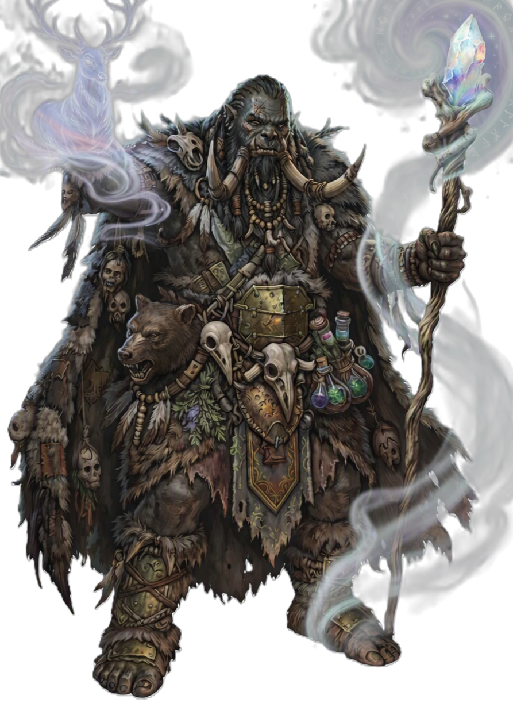

| Rolle | Vollzauberer · Geisterzauberer · Heiler · Unterstützer · Beschwörer |
| Zauberertyp | Vollzauberer Zauberslots bis Rang 9 |
| Primärer Schadensattribut | Weisheit (WIS) |
| Sekundärer Schadensattribut | — |
| Zauberattribut | Weisheit (WIS) |
| TP (L1) | 8 |
| TP pro Level | 5 |
| Rüstung | Mittlere Rüstung (kein Metall) |
| Waffen | Naturwaffen — Keule, Dolch, Wurfpfeil, Speer, Schleuder, Streitkolben |
| Rettungswürfe | Weisheit (WIS), Konstitution (KON) |
| Attributsteigerung (Level) | 4, 8, 12, 16 |
| Fertigkeiten (2 zur Auswahl) | Geisteskunde, Tierkunde, Medizin, Naturkunde, Wahrnehmung |
Der SCHAMANE ist die Brücke zwischen den Welten — er ruft Ahnen und Geister, heilt mit Geisterenergie und lenkt den Kampf durch Ahnenflüche und Geisterwände. Weisheit treibt seine Zauber, Konstitution macht ihn robust. Wo der KLERIKER göttliche Macht kanalisiert, ruft der SCHAMANE die Geister der Vorfahren — Ahnenfluch verflucht Gegner, Ahnenmacht und Ahnensturm fügen GEIST-Schaden zu, Ahnensegen bufft die Rettungswürfe der Gruppe. Seine Geisterheilung gibt temporäre TP zusätzlich zur Heilung (ab L2, skaliert mit Level), Geisterschild bufft die RK und gibt physische Resistenz, Geisterruf beschwört einen Geist-Begleiter. Mit Ahnenzorn (L5) fügt ein Geist 1/Zug +1W6 Schaden hinzu wenn Verbündete treffen. Geisterwandel (L18) lässt ihn durch Wände bewegen, Großer Geist (L20) verwandelt ihn in eine Geisterform. Er ist der vielseitigste Geisterzauberer — Heilung, Schaden, Kontrolle und Beschwörung in einer Klasse.
| Level | Fähigkeit | Beschreibung |
|---|---|---|
| L1 | Geisterführer | Passiv: Vorteil auf einen gewählten Rettungswurf. |
| L2 | Temporäre Heilung | Passiv: Heilzauber geben zusätzlich temporäre TP (Profan-Bonus, skaliert mit Level). |
| L3 | Geistergabe | Wähle 2 zusätzliche Zauber aus der Schamane-Liste (bis Rang 2). |
| L5 | Ahnenzorn | Passiv: 1/Zug, wenn Verbündeter trifft, Geist fügt +1W6 Schaden hinzu. |
| L6 | Spirituelle Heilung | Passiv: Heilungszauber heilen zusätzlich 1W6. |
| L6 | Geisterschild | Reaktion: Verbündeter in 6 Feldern nimmt Schaden → reduziere um 1W6+Level. |
| L10 | Ahnenwächter | Verbündete in 10ft erhalten temporäre TP. |
| L10 | Geisterbeschwörung | 1/Lange Rast: Geisterwächter beschwören. |
| L14 | Geister-Verbesserung | Passiv: Beschworene Geister erhalten +2 TP pro deinem Level. |
| L18 | Geisterwandel | Passiv: Kann durch Kreaturen und Wände bewegen (ätherisch). |
| L20 | Großer Geist | Verwandle dich in eine Geisterform (Form-System: SPIRIT_FORM). |
Alle Zauber nutzen Zauberslots (Vollzauberer-Progression, Rang 1–9). Zauberattribut ist Weisheit (WIS). Upcast-Skalierung pro zusätzlichem Zauberslot bei Geisterschlag (+1W8), Geisterheilung (+1W4 Heilung), Ahnenmacht (+1W6), Lebensstrom (+1W8 Heilung).
| Fähigkeit | Aktion | Nutzung | Level | Beschreibung |
|---|---|---|---|---|
| Geisterschlag | Aktion | Basiszauber — unbegrenzt | L1 | GEIST 1W8 Geist, Angriffswurf. Upcast mit Zauberslot: +1W8 pro Slot. |
| Fähigkeit | Aktion | Nutzung | Level | Beschreibung |
|---|---|---|---|---|
| Ahnenfluch | Aktion | Zauberslot 1 | L1 | GEIST Ziel muss WIS-Rettungswurf ablegen oder wird verflucht (1 Minute). |
| Geisterheilung | Aktion | Zauberslot 1 | L1 | GEIST Berührung: Heile 2W4+2 + temporäre TP. Upcast: +1W4 Heilung pro Slot. |
| Geisterruf | Aktion | Zauberslot 1 | L1 | GEIST Beschwöre einen Geist als Begleiter für 1 Minute. |
| Lebensgeist | Aktion | Zauberslot 1 | L1 | GEIST Flächeneffekt 10ft um dich: Heile alle Verbündeten 1W4+1. |
| Geisterschild | Aktion | Zauberslot 2 | L3 | GEIST Verbündeter erhält +2 RK + physische Resistenz für 1 Minute. |
| Reinigung | Aktion | Zauberslot 2 | L3 | GEIST Entferne 1 Zustand von einem Verbündeten. |
| Ahnenmacht | Aktion | Zauberslot 3 | L5 | GEIST 5W6 Geist + WIS-Rettungswurf (halber Schaden bei Erfolg). Upcast: +1W6 pro Slot. |
| Geisterwand | Aktion | Zauberslot 3 | L5 | GEIST Flächeneffekt 20ft: Alle Gegner müssen WIS-Rettungswurf ablegen oder werden verängstigt (1 Minute). |
| Lebensstrom | Aktion | Zauberslot 4 | L7 | GEIST Flächeneffekt 20ft: Heile alle Verbündeten 4W8. Upcast: +1W8 Heilung pro Slot. |
| Ahnensegen | Aktion | Zauberslot 4 | L7 | GEIST Aura 10ft: Verbündete erhalten +1W4 auf Rettungswürfe für 1 Minute. |
| Ahnensturm | Aktion | Zauberslot 5 | L9 | GEIST Flächeneffekt 20ft: 8W8 Geist + WIS-Rettungswurf (halber Schaden bei Erfolg). |
| Ressource | Mechanik | Verfügbarkeit |
|---|---|---|
| Zauberslots | Vollzauberer-Progression (Rang 1–9). Zauberattribut: WIS. | Alle Zauber, pro Zauberslot |
| Geisterschild | Reaktion: Schaden für Verbündeten reduzieren (1W6+Level) | Pro Rast, ab L6 |
| Geisterbeschwörung | Geisterwächter beschwören | 1/Lange Rast, ab L10 |
| Großer Geist | Verwandlung in Geisterform (SPIRIT_FORM) | Ab L20 |